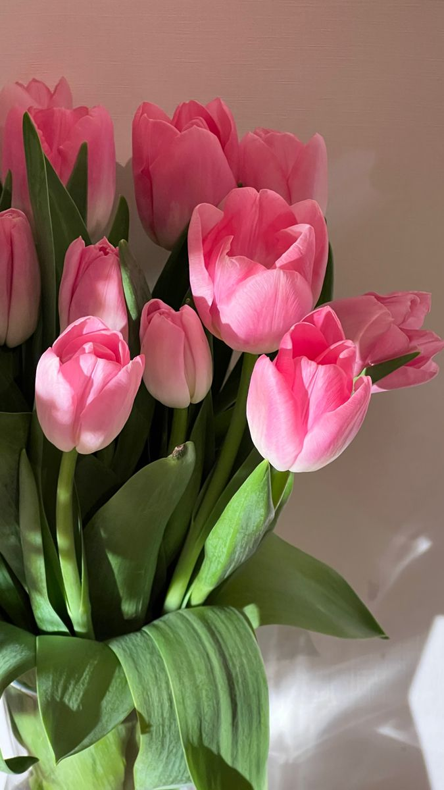
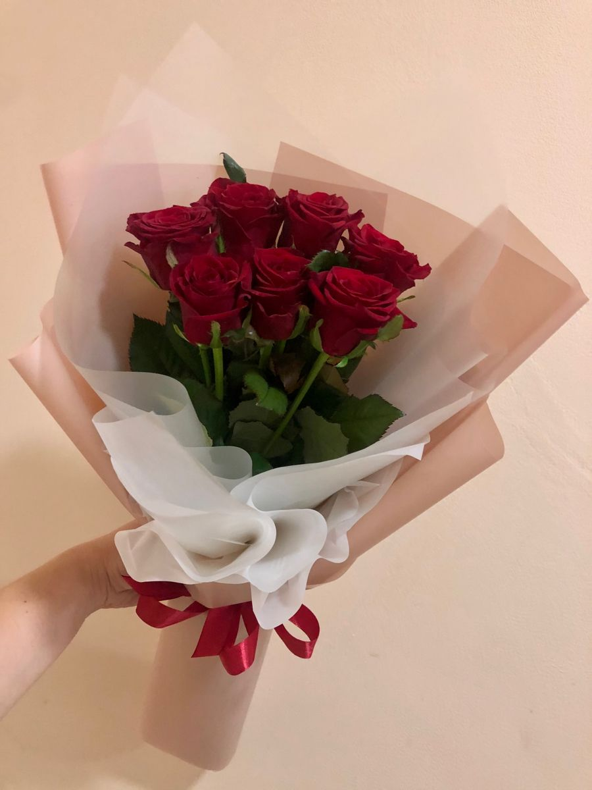
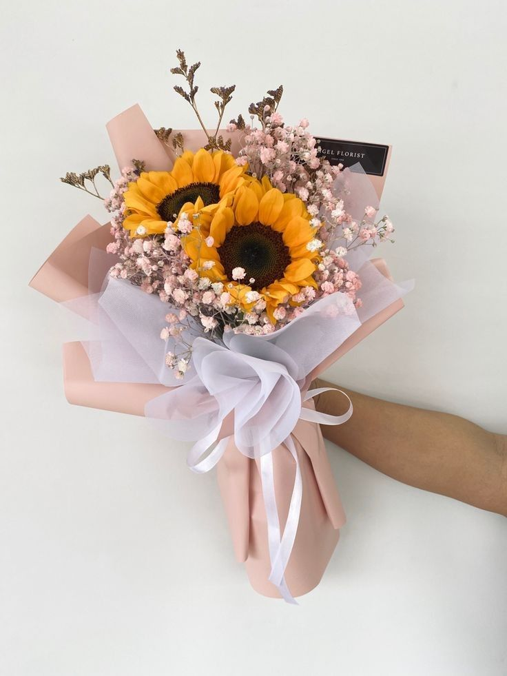
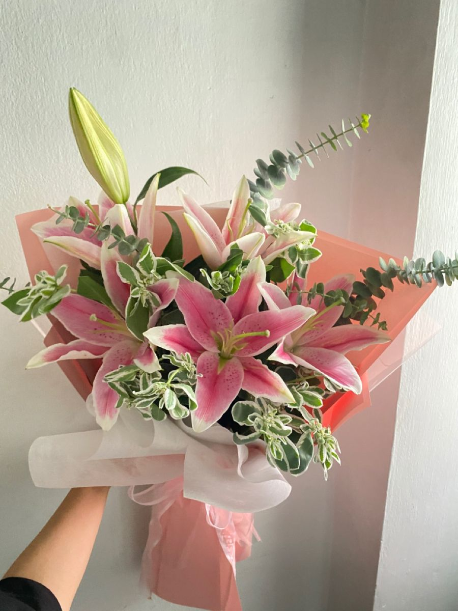

The Language of Flowers
| N. | Img | Name | Meaning |
|---|---|---|---|
| 1 |  |
Tulips are symbolic of deep love, elegance, and grace. They represent perfect love and are often associated with spring, renewal, and hope. Order now |
|
| 2 |  |
Roses symbolize love and passion. Each color carries unique meanings, from red for romance to yellow for friendship and white for purity. Order now |
|
| 3 |  | Sunflower |
With their radiant faces, sunflowers symbolize loyalty, adoration, and positivity. Giving sunflowers expresses a wish for joy, warmth, and a reminder to always look toward the light, no matter how dark the times may seem. Order now |
| 4 |  |
Chamomile |
A humble yet meaningful flower, chamomile represents relaxation, resilience, and peace. Gifting chamomile is a thoughtful way to wish someone tranquility and strength, reminding them to take a moment to breathe and find calm. Order now |
| 5 |  |
Lilies symbolize purity, renewal, and elegance. Their different colors convey admiration, hope, or joy, making them versatile gifts. Order now |
|
| 6 |
Hyacinths are symbolic of playfulness, rebirth, and sincerity. They are vibrant spring flowers that brighten up any garden or bouquet. Hyacinths carry additional meanings based on their color, making them suitable for various emotional expressions. Order now |
||
| 7 | Peony |
Peonies are lush and romantic, symbolizing prosperity, honor, and good fortune. When gifted, they express a wish for happiness, abundance, and a prosperous future. They are especially meaningful in romantic settings, representing devotion and love. Order now |
|
| 8 | Daffodil |
Daffodils are a bright and hopeful symbol of new beginnings and resilience. Gifting daffodils expresses encouragement, optimism, and a wish for a fresh start filled with happiness. Order now |
|
| 9 |
Carnations symbolize love, admiration, and distinction. Their wide range of colors allows them to express a variety of emotions and sentiments. Order now |
||
| 10 | Orchid |
Exquisite and elegant, orchids represent rare beauty, strength, and refinement. When given as a gift, they convey admiration for the recipient's uniqueness and grace, often symbolizing deep respect and luxury. Order now |
|
| 11 | Daisy |
Simple and charming, daisies symbolize innocence, purity, and true love. When gifted, they express sincere admiration and celebrate the recipient's cheerful and kindhearted nature. Order now |
|
| 12 | Chrysanthemum |
Chrysanthemums symbolize loyalty, joy, and long life. When gifted, they express celebration, friendship, or respect. In some cultures, they are a token of honor and remembrance. Order now |
|
| 13 | Lavender |
Lavender is the flower of calm and devotion. When given as a gift, it conveys serenity, grace, and a deep wish for the recipient to find peace and relaxation in life. Order now |
|
| 14 | Jasmine |
Jasmine is a fragrant flower that symbolizes purity, love, and sensuality. Gifting jasmine expresses admiration and a celebration of the recipient's beauty and charm. Order now |
|
| 15 | Hydrangea |
Hydrangeas are a heartfelt gesture, representing gratitude, understanding, and abundance. They are perfect for expressing deep emotions, whether it's an apology, appreciation, or a celebration of a meaningful bond. Order now |
|
| 16 | Baby's Breath |
This delicate flower symbolizes innocence, purity, and everlasting love. Often used as a complement to other flowers, baby's breath is a sweet gesture of enduring affection and care. Order now |